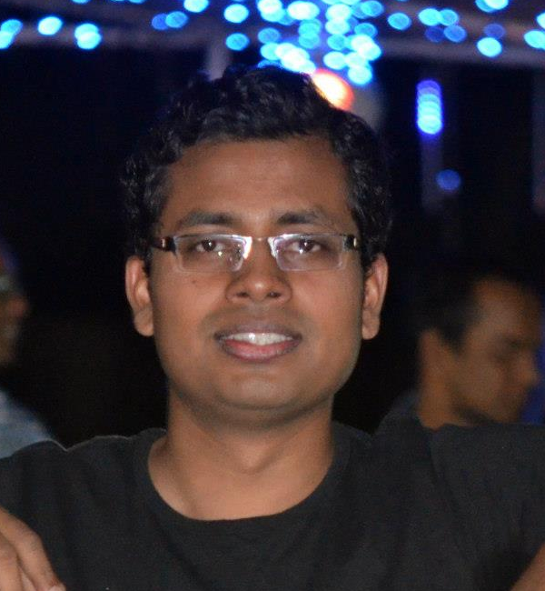

Ashutosh Kumar Nirala
email: akn.nirala@gmail.com
Current trivia
- Going through CS20SI, to understand tensorflow better. Would do a writeup soon.
- Brushing up ML, Probability and Linear Algebra. Idea is:
- Hone my ML skills, and also a bit of probability and maths needed for it.
- I would try to code (search esxisting code) improtant stuff (like application of certain algo) and would keep uploading it here.
- Know most of the concepts covered in the Bishop book and understand many (this one is a long project, will taake few months).
- Working on BRAIN: It is an organizer and note-taking application. It stores the information at a very granular level, in directed acyclic graph, and acts like a secondary storage unit for us. It has a little intelligence as well (thus the name BRAIN), and it is still work in progress. Till the time it comes out (easily +6 months), please use my annotation chrome extension. :-)
Done/Maintaining
Nice (Different, substantive)